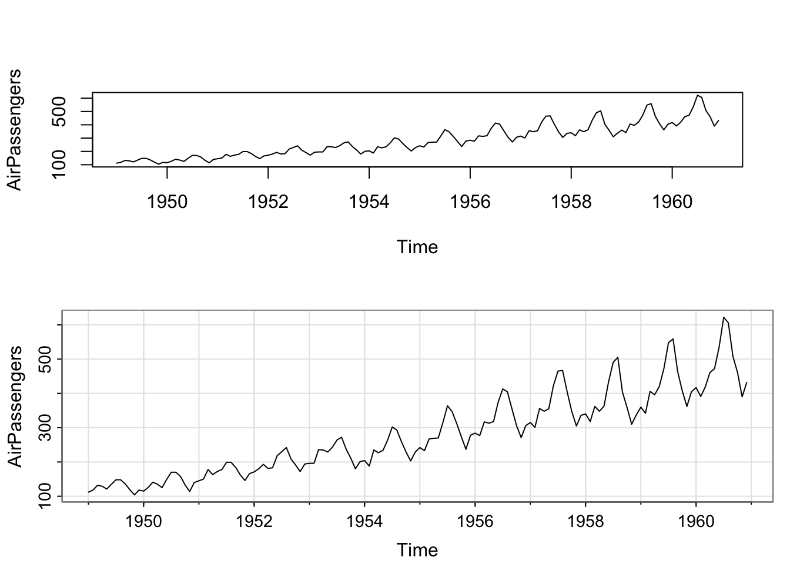
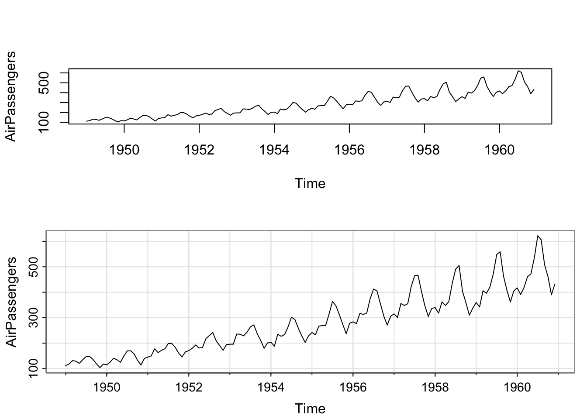

{kind=link}
{kind=link}
{kind=link}
{kind=link}
library(astsa) # 调用 astsa 包
par(mfrow = c(2,1)) # 将绘图窗口分割成上下两部分
plot(AirPassengers) # 使用 R 的标准绘图命令 plot
tsplot(AirPassengers) # 使用 astsa 包中的绘图命令 tsplot
点击 slides 画面，然后用 键或 键控制翻页。点击 slides 左下角的 图标可以发现更多功能。
如何将 slides 保存到自己的电脑上：
e 键，会生成可以打印的文件（生成过程可能会很慢，且只保证在 Chrome 中有效）R和RStudio的安装：访问 https://posit.co/download/rstudio-desktop/，根据提示依次下载并安装 R 和 RStudio
在 RSTudio 中设置 Primary CRAN repository （下载 package 的默认镜像网站）：用 RStudio 默认的设定下载安装 package（包），有时会因网络连接超时而失败。解决该问题的方法是选择中国境内的镜像网站，具体方法如下
第一步：打开 RStudio，从菜单中选择 Tools > Global Options... > Packages （如下图）
第二步：点击 Primary CRAN repository 右侧的 Change... 键，从弹出的窗口中选择中国境内的镜像网站（下图中选择的是清华大学的镜像网站 TUNA）
安装本门课程所需的包 xts 和 astsa：从菜单中选择 Tools > Install Packages... ，如下图
在 Packages 一栏中输入 xts, astsa ，并确保下面的 Install dependencies 已被选中，然后点击 Install。
astsa 包中的绘图命令 tsplot：
library(astsa) # 调用 astsa 包
par(mfrow = c(2,1)) # 将绘图窗口分割成上下两部分
plot(AirPassengers) # 使用 R 的标准绘图命令 plot
tsplot(AirPassengers) # 使用 astsa 包中的绘图命令 tsplot
由上图可见，用 tsplot 命令画出的图更漂亮，可读性更高。实际上 tsplot 命令是在原生的 plot 命令的基础上对四边空白等参数进行了优化调整。需要注意的是，上面的命令在 RStudio 里会呈现不同的效果，因为 RStudio 会根据 Plots 窗口的大小自动调整图的长宽比。
help() 命令查询帮助文件，例如 help(class) 。